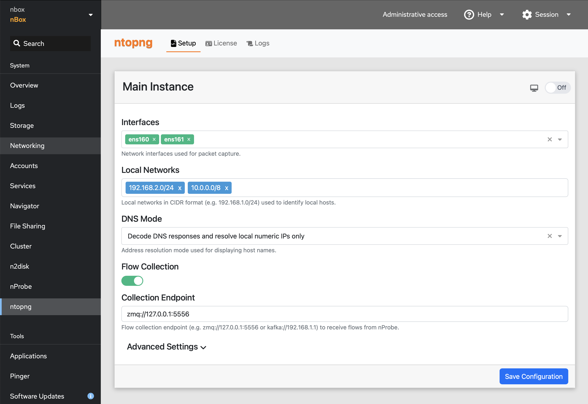
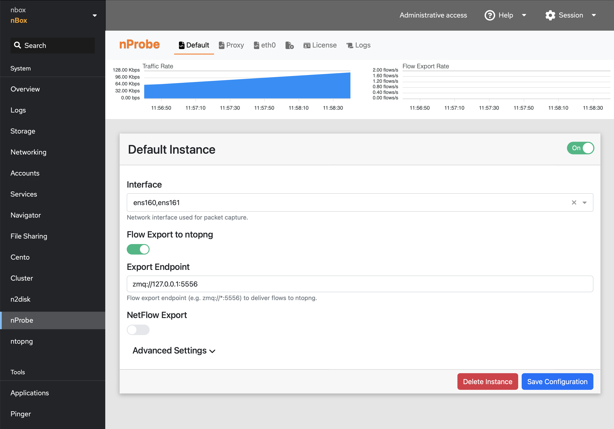

4. Приложения
Пользовательский интерфейс nBox включает пункт меню для каждого приложения ntop, которое можно настроить через веб-интерфейс. Страницы конфигурации позволяют пользователю настраивать и контролировать все установленные и лицензированные приложения ntop путем управление файлами конфигурации и службами systemid способом, полностью совместимым с настройками вручную.
Приложения включают ntopng, nProbe, nProbe Cento, n2disk. Кластер также является частью приложений и используется для балансировки трафика между экземплярами приложения или для отправки одного и того же трафика нескольким экземплярам приложения. (или комбинации того и другого).
4.1. ntopng
Страницу ntopng можно использовать для настройки и включения приложения ntopng. Страница предоставляется пользователю в виде вкладок, где его первая вкладка — это вкладка «Настройка», которая позволяет пользователю настраивать ntopng и контролировать состояние службы. Лицензия Вкладка позволяет пользователю установить и проверить лицензионный ключ для разблокировки корпоративных функций. Вкладка «Журналы» ведет на страницу «Журналы», где журналы фильтруются и отображаются только те, которые относятся к службе ntopng.
На странице настройки пользователь должен:
Проверьте настройки ntopng
Измените настройки и сохраните их с помощью кнопки «Сохранить конфигурацию».
Запустите службу с помощью переключателя в правом верхнем углу панели конфигурации.

Когда переключатель установлен в положение «Вкл.», сам переключатель горит зеленым, если служба запущена, в противном случае он горит красным, что означает, что в службе произошел сбой (в этом случае можно просмотреть журналы для получения дополнительной информации), или она все еще находится в процессе запуска, или процесс выключения (в этом случае следует подождать несколько секунд).
Все физические интерфейсы представлены в раскрывающемся списке «Интерфейсы», выбранные будут установлены в ntopng для захвата. трафик. В раскрывающихся списках также доступна опция «Пользовательский интерфейс», которая позволяет пользователю настроить собственный интерфейс. имя (его следует использовать для определения логических интерфейсов или для подключения к определенной очереди интерфейсов). Также доступна опция «Сбор потока» для сбора потоков с датчиков (nProbe или nProbe Cento), например, при сборе данных. NetFlow коллектор (в этом случае ntopng не нужно перехватывать пакеты напрямую с сетевой карты).
На странице конфигурации доступны еще несколько настроек, таких как режим разрешения DNS, подсети локальной сети и т. д. Дополнительные параметры можно настроить в разделе «Дополнительные настройки», используя синтаксис файла конфигурации ntopng.
4.2. nProbe
Подобно странице ntopng, страницы nProbe и nProbe Cento можно использовать для настройки и управления соответствующими приложениями. В этом случае можно создать несколько экземпляров nProbe, каждый со своей конфигурацией и сервисом, с помощью кнопки «Добавить». Кнопка «Экземпляр» в верхнем меню.
После создания, настройки и запуска экземпляра nProbe в верхней части страницы появляется диаграмма, обеспечивающая мониторинг скорость входящего трафика и скорость экспорта потока. Это полезно для мониторинга активности службы, поскольку сама служба не дает GUI.

4.3. n2disk
Страницу n2disk можно использовать для настройки нескольких служб n2disk. По сути, это похоже на страницу конфигурации nProbe. возможно создавать несколько экземпляров, настраивать и запускать их. В этом случае также доступны некоторые диаграммы для мониторинга захваченный трафик и трафик, сброшенный на диск вместе с пропускной способностью ввода-вывода.
В разделе конфигурации можно выбрать объем хранилища для дампа файлов, установить максимальное пространство Максимальный размер каждого файла PCAP, сохраняемого на диск. Дополнительные настройки (например, сходство CPU) можно настроить в раздел «Дополнительные настройки».

Вкладка «Извлечение» позволяет пользователю планировать задачи извлечения для извлечения трафика из всех сброшенных файлов PCAP. на диске. Новую задачу извлечения можно создать, нажав кнопку + в правом верхнем углу панели и указав временной интервал и фильтр (BPF) для сопоставления пакетов, исходное хранилище (как настроено в n2disk), выходную папку для PCAP создаваемых файлов и максимальный размер наших выходных файлов.

После создания новой задачи извлечения в таблицу «Извлечение» добавляется новая запись, где можно проверить статус извлечения и перейдите к Навигатору для загрузки извлеченных файлов.